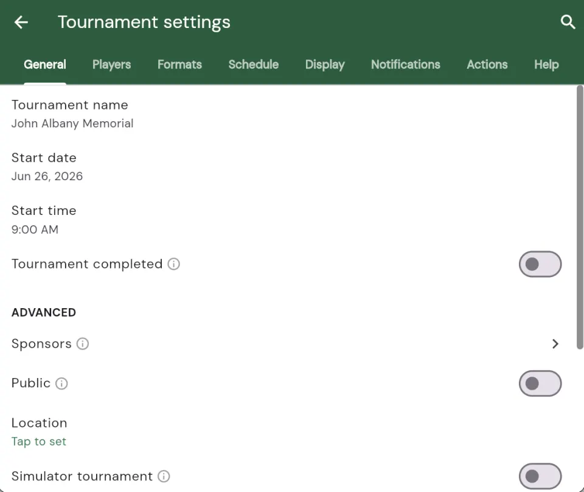
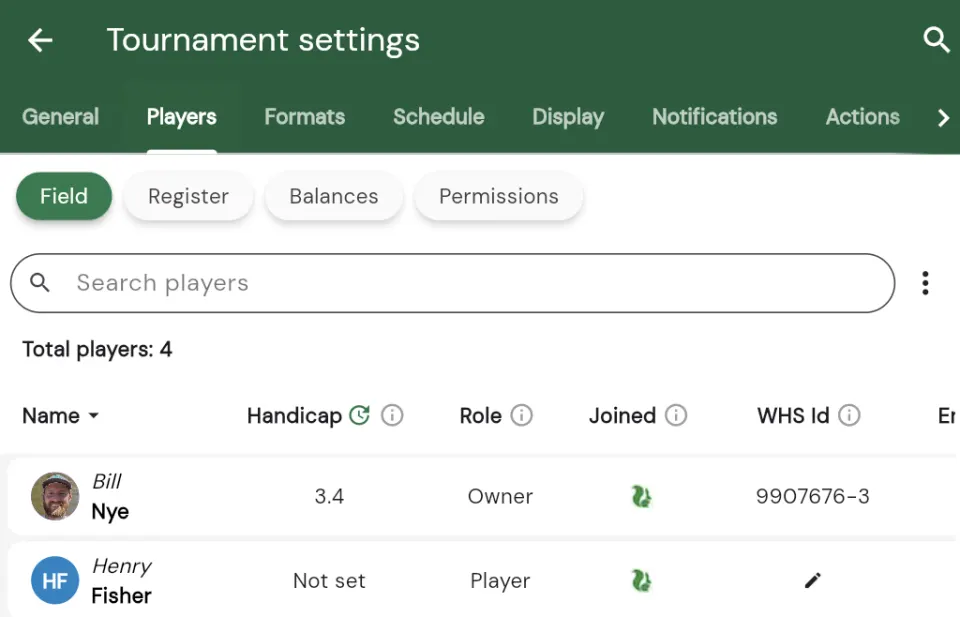
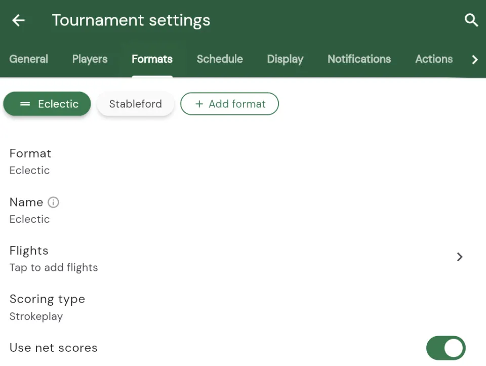
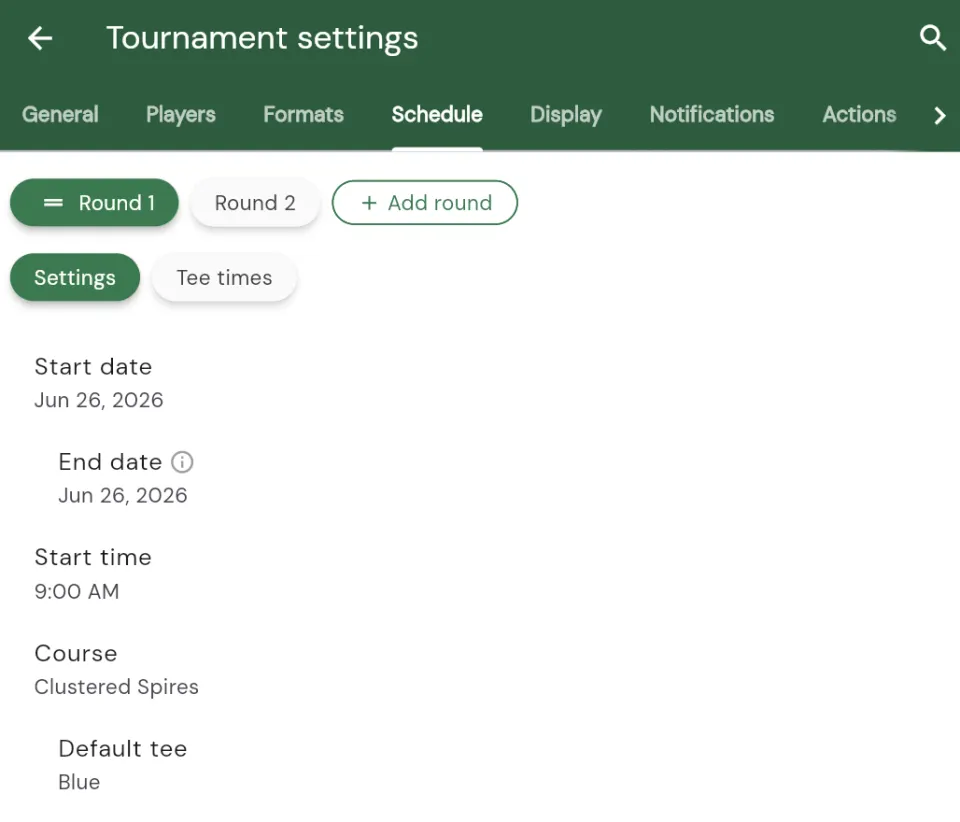

Tournament Settings
Every tournament in Squabbit has a settings page where you control how it runs, who can play, what leaderboards appear, and much more. The settings have been redesigned and are now organized into tabs so you can find what you need quickly. In this article we’ll walk through each tab and the new in-settings search.
Opening the settings
You can open the settings from any tab of your tournament by tapping the gear icon in the top toolbar.
The settings page opens with a row of tabs along the top. Tap a tab to switch between the different groups of settings. The tabs are General, Players, Formats, Schedule, Display, Notifications and Actions.

Search your settings
With so many options available, the fastest way to reach a specific setting is the new search. Tap the search icon in the settings toolbar and start typing the name of what you’re looking for.

As you type, Squabbit filters every setting across all of the tabs and shows the matches, automatically expanding the sections that contain them. You don’t need to remember which tab a setting lives on. Just type its name, for example “handicap” or “tee time”, and jump straight to it. If your search doesn’t turn up what you were after, you can also ask Squabbit AI right from the results.
General
The General tab holds the core details of your tournament, including the tournament name, start date and start time. This is also where you mark a tournament as completed once it’s finished.
Further down you’ll find more advanced options such as sponsors, pace of play and scorecard markers. As with all settings pages in Squabbit, each field is a row you tap to edit, and info icons ⓘ explain what the less common options do.
Players
The Players tab is where you manage everyone in your tournament. It is split into four sub-sections that you switch between using the chips at the top: Field, Register, Balances and Permissions.

Field
Field is the list of players in your tournament. From here you can add players, change a player’s nickname, set their tee, mark walking or riding, make someone an admin and more. For a full walkthrough of adding players, see the Creating a Tournament article.
Register
Register is where you set up entry fees and control self-registration, so players can sign themselves up for your tournament instead of you adding each one manually.
Balances
Balances shows what each player owes or is owed, pulling together entry fees, side game purses and any expenses. This gives you an at-a-glance view of the money side of your event.
Permissions
Permissions controls what players are allowed to do. Options here include whether players can enter scores or only admins can, whether players can score at any time, upload photos, add expenses and more.
Formats
The Formats tab is where you choose the games and leaderboards for your tournament, such as Strokeplay, Ryder Cup, Skins, Stableford and Scramble. Your existing formats appear as a row of chips at the top, and tapping a format opens its settings directly on the same page so you can edit it inline.

To add a new format, tap the Add format chip at the end of the row and choose the format you want. Because a new format is only committed once you tap the explicit Add button, you can review its options first without accidentally leaving a half-configured format on your tournament.
Schedule
The Schedule tab controls how your rounds are timed and structured. Here you can adjust tee times, manage the rounds in your tournament, and set up matches between players or teams.

This is where you choose things like whether it’s a shotgun start or the interval between tee times. To actually build out the tee times and matches for a round, use the Schedule tab on the tournament itself, which is covered in the Creating a Tournament article.
Display
The Display tab controls what your tournament looks like to everyone viewing it. You can show or hide the Leaderboard, Schedule and Activity tabs, and control whether things like handicaps and player avatars appear on the leaderboard.
These options let you tailor the view for your audience. For example, you might hide the Schedule tab for a casual event or turn off handicaps for a gross-only tournament.
Notifications
The Notifications tab controls the push notifications your tournament sends. You can turn individual notifications on or off, such as birdies, hole competitions, match results and leaderboard changes.
Each format you’ve added can also have its own notification, so you can keep the ones that matter and quiet the rest.
Actions
The Actions tab gathers the one-off things you can do with a tournament. This includes printing tournament assets such as scorecards and cart signs, exporting your data as a CSV, copying the tournament, and transferring ownership.
Destructive actions like deleting the tournament live here too, at the bottom, and always ask you to confirm before anything happens.
That’s the tour!
That covers every tab in the redesigned tournament settings. If you’re ever unsure where a setting lives, remember you can just tap the search icon and type its name. And most options have an info icon ⓘ beside them that explains exactly what they do.
If you get stuck or want to request a feature that isn’t in the app yet, use the Help menu in the app.
Enjoy!